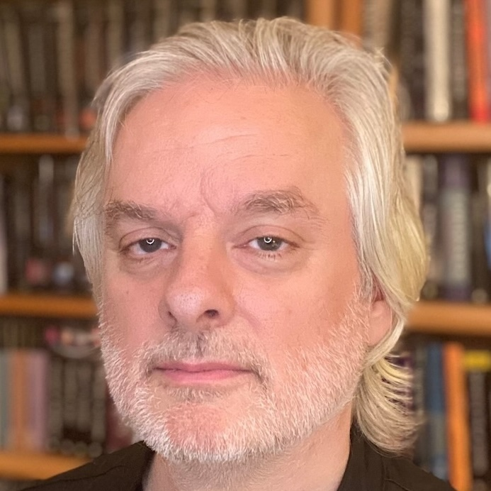
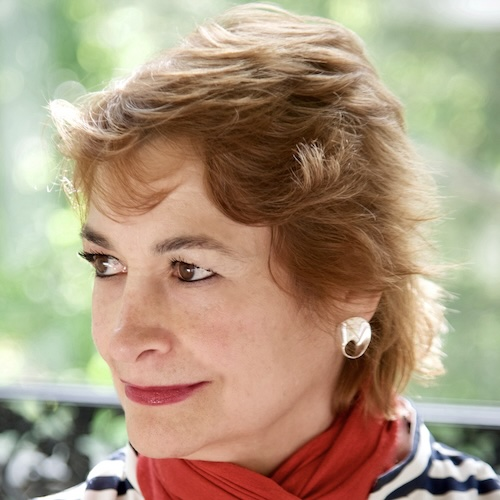
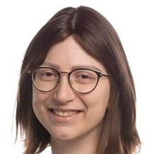
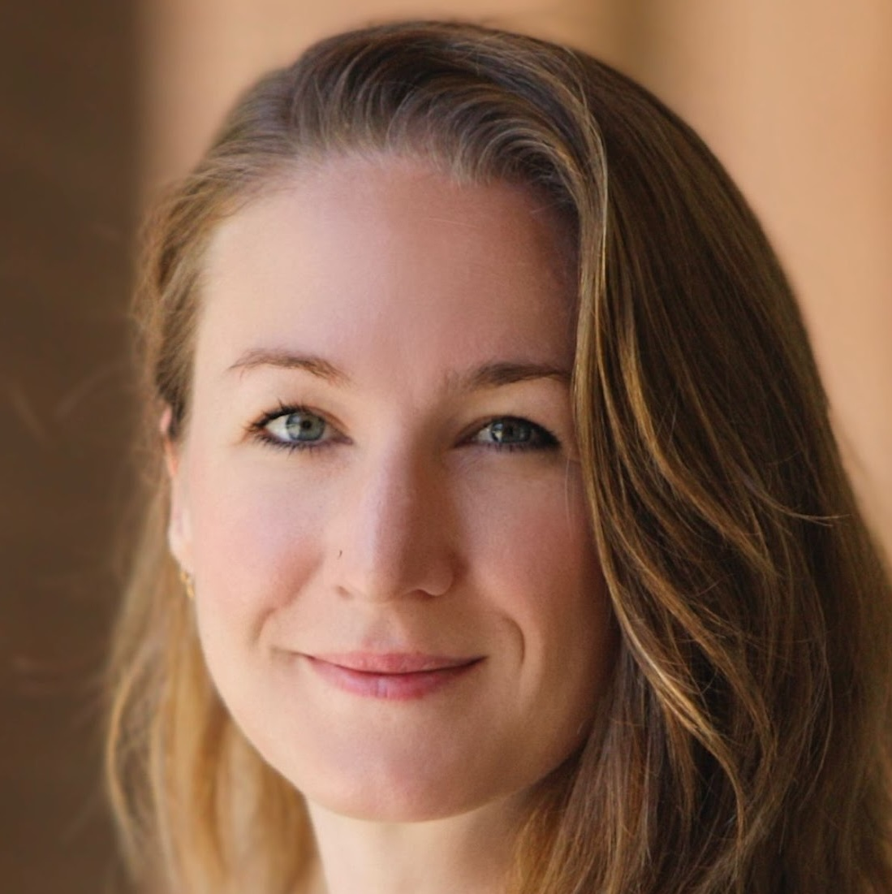
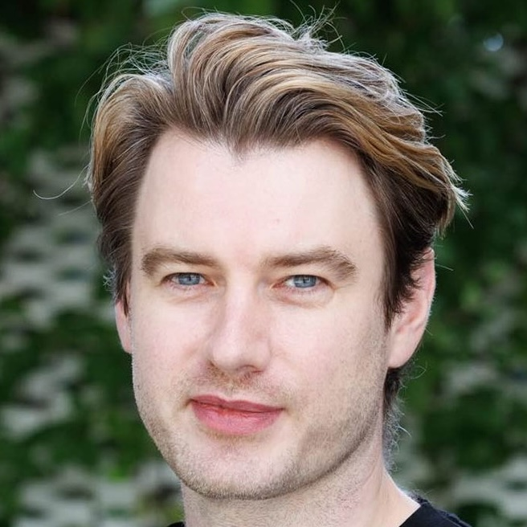
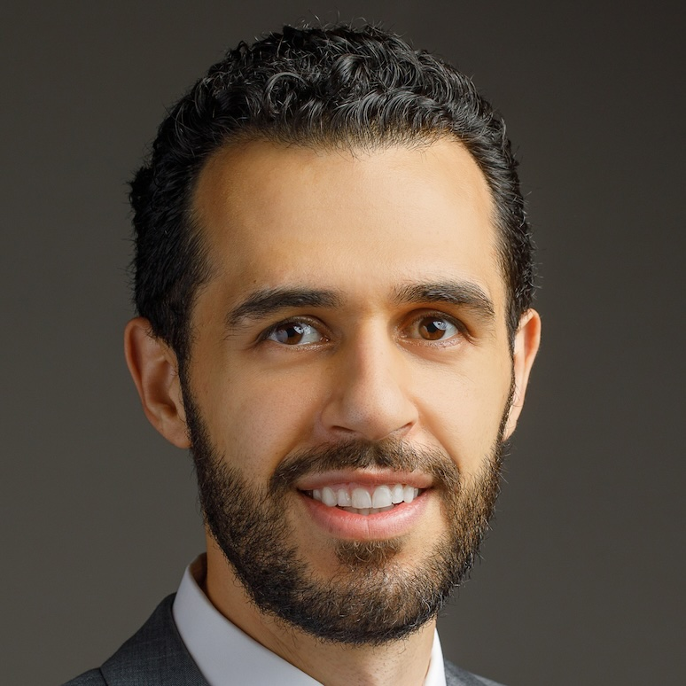
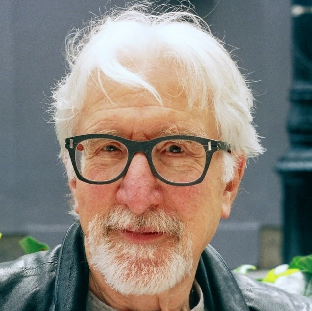

Keynote talks
Longer talks from senior researchers connecting computational approaches with central questions about perception, awareness, attention, and conscious experience.
CCN 2026 Satellite Event
Bringing computational modelling, neuroscience, and philosophy together to understand conscious experience.
If you would like to attend the Computational Consciousness Science satellite, please register below. Registration is FREE and you DO NOT need to sign up for the main CCN conference, but you have to register as we have to give a list of attendees to security.
Register to AttendA recent explosion of interest in computational models of consciousness comes both from our attempts to extend computational models of perception and cognition to their subjective aspects and from the importance of consciousness to the ethical implications of AI models.
This satellite meeting examines computational approaches from the points of view of philosophy, psychology, and neuroscience, with keynotes from David Chalmers (philosophy), Marisa Carrasco (psychology), and Biyu He (neuroscience).
There will also be research talks from faculty, postdocs, and PhDs highlighting the contribution of computational models to our understanding of change-blindness, iconic memory, spatial perception, and visual illusions, as well as helping us to develop new measures of conscious awareness.
A closing panel discussion will explore new and future directions for the emerging discipline of computational consciousness science.
Longer talks from senior researchers connecting computational approaches with central questions about perception, awareness, attention, and conscious experience.
Focused talks from faculty, postdocs and PhD students working on computational models, consciousness measures, perceptual inference, memory, and related topics.
Moderated discussion of new and future directions for Computational Consciousness Science and its implications for Cognitive Computational Neuroscience and AI.

New York University

New York University
New York University

Columbia University
MIT
MIT

UC Irvine + UCL

Columbia University

National Institutes of Health
Harvard University
Columbia University
MIT
Columbia University

New York University
New York University